因为一直都是使用VS Code进行开发， 所以就想尝试看看能不能使用VS Code进行简单的开发，没有用到复杂的功能，简单的spring项目应该是没有问题的
安装扩展插件
- Java Extension Pack
- Spring Boot Extension Pack
在 setting.json 文件中配置maven和jdk
1 | "java.home":"C:\\Program Files (x86)\\Java\\jdk1.8.0_102", |
配置完成之后，需要重启VS Code
创建 spring boot 项目
1. 创建一个 spring 项目
ctrl + shift + p, 输入 spring, 选择 Create a maven project...
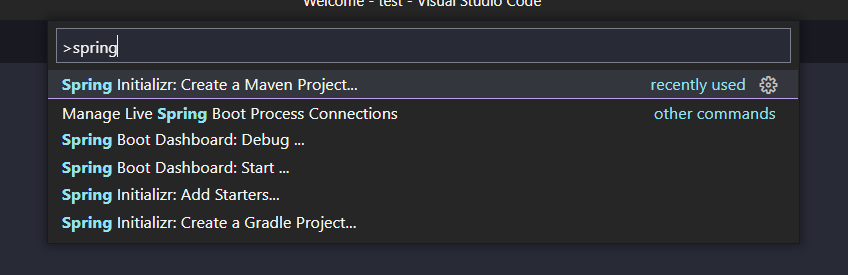
2. 选择spring版本
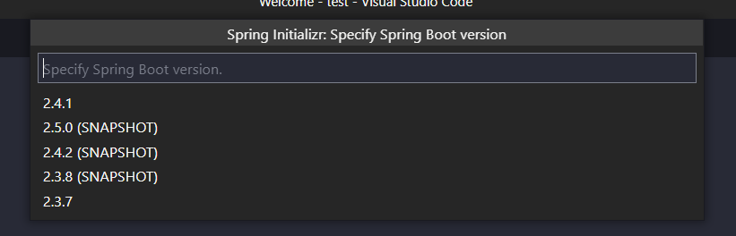
3. 选择语言
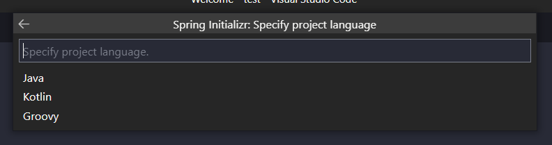
4. 输入group id
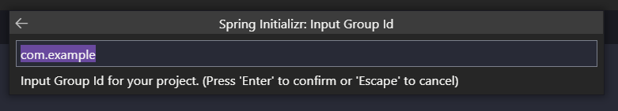
5. 输入artifact id
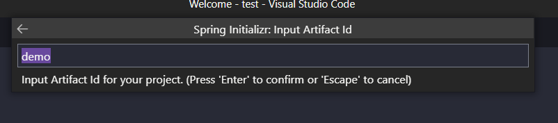
6. 选择package type
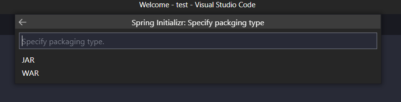
7. 选择jdk版本
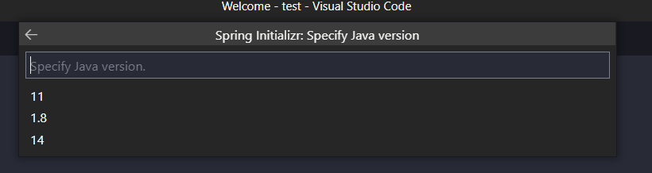
8. 选择dependencies
- DevTools(代码修改热更新，无需重启)
- Web(集成tomcat、SpringMVC
- Lombok(智能生成setter、getter、toString等接口，无需手动生成)
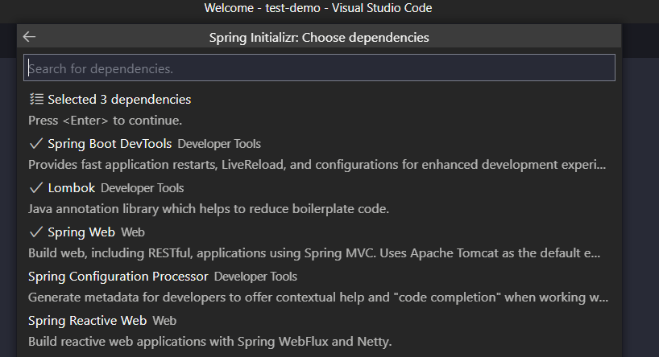
9. 选择项目目录
直接点击 Generate into this folder 按钮即可
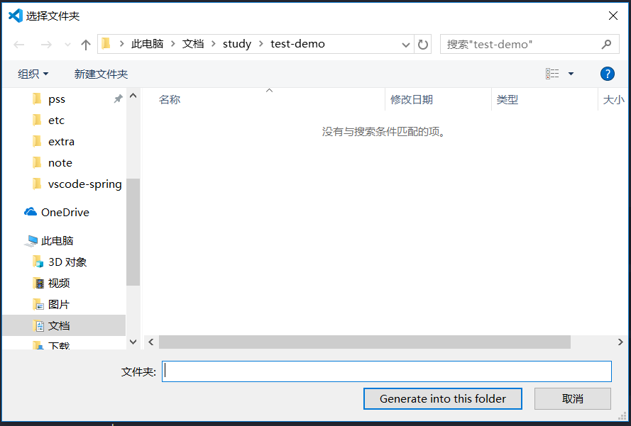
启动项目
1. 生成launch.json文件
打开项目目录，打开
DemoApplication.java, 点击小虫子按钮, 生成launch.json文件
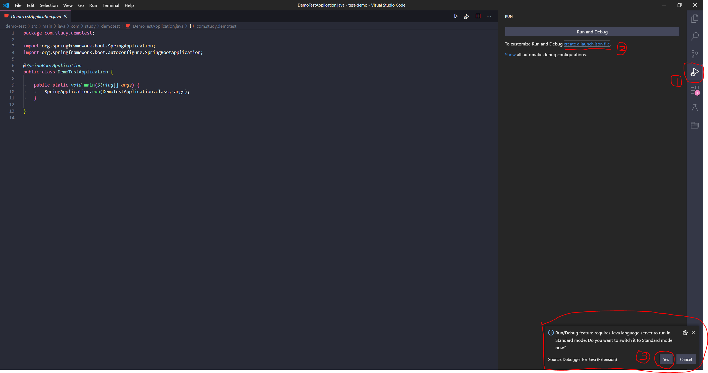launch.json文件如下图所示：
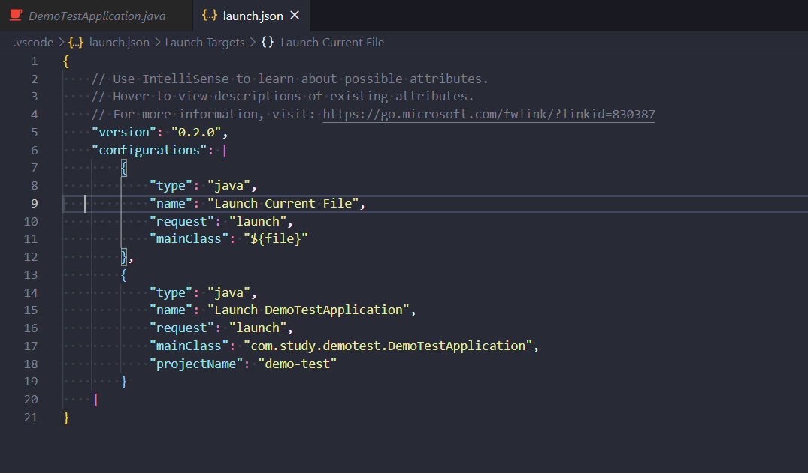点击三角形按钮，启动spring项目
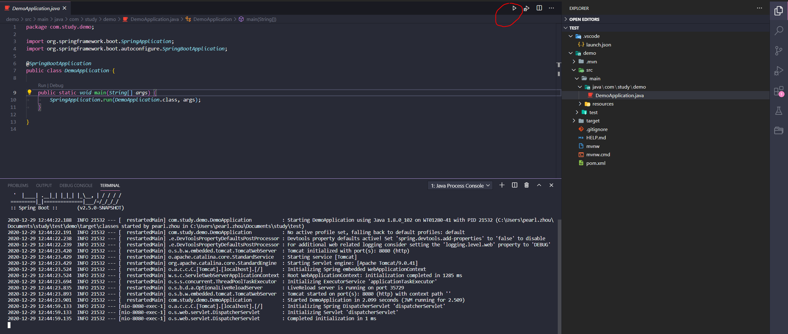
2. 启动 spring 项目
浏览器输入 localhost:8080 访问
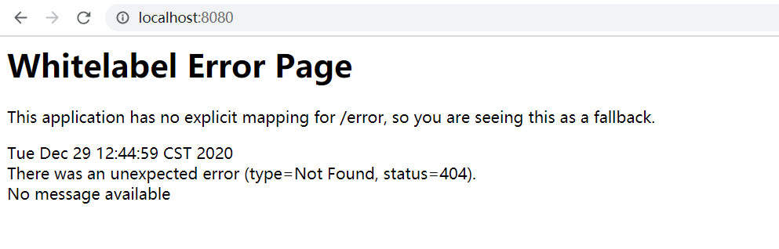
错误原因:没有定义服务器访问这个根路径对应的应答接口
在demo包下面新建个controller包，然后新建个HomeController.java 文件，目录结构如下：
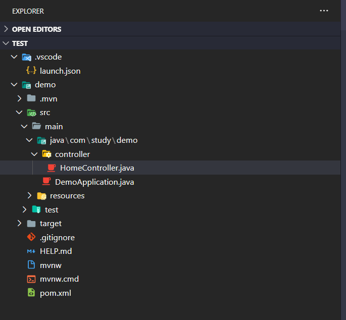文件内容如下：
1
2
3
4
5
6
7
8
9
10import org.springframework.web.bind.annotation.RequestMapping;
import org.springframework.web.bind.annotation.RestController;
public class HomeController {
public String home(){
return "Hello World!";
}
}重新刷新浏览器，即可看到访问成功
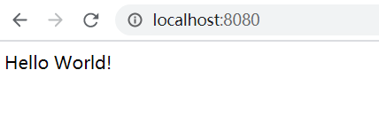